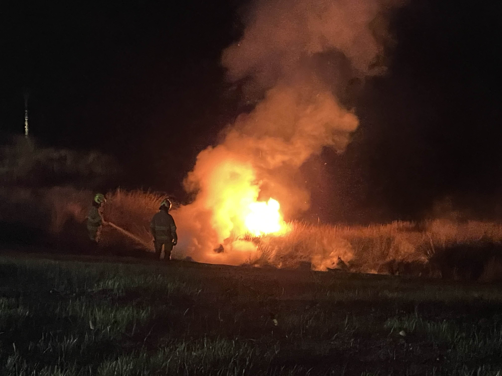
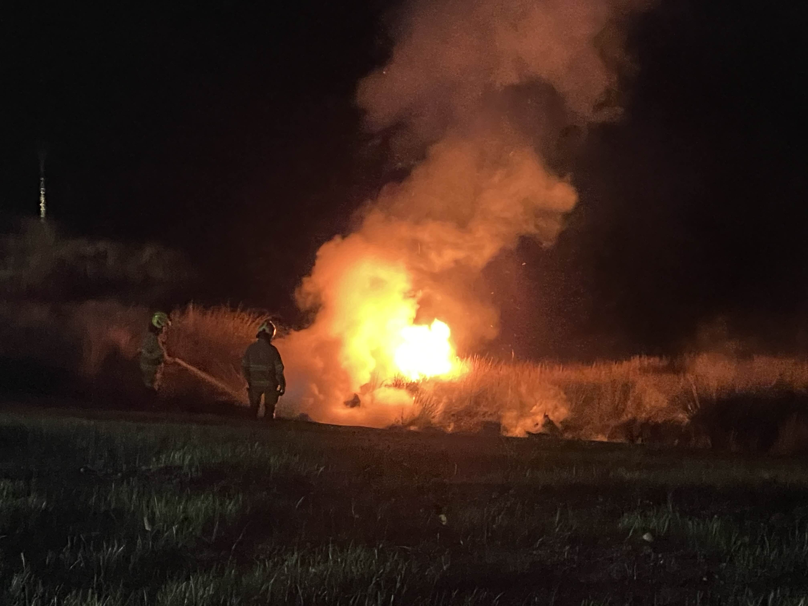

Reliable. Immediate. Local.
Welcome to Tasmanian Emergency Media a trusted source for breaking updates, vital resources, and real-time alerts across Tasmania. Stay informed. Stay prepared.
Welcome to Tasmanian Emergency Media a trusted source for breaking updates, vital resources, and real-time alerts across Tasmania. Stay informed. Stay prepared.
 
